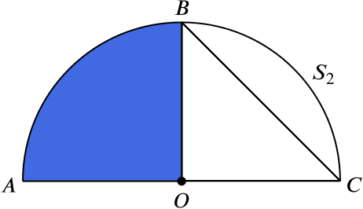

State the theorem of Pythagoras concerning the three sides of a right-angled triangle.
Pythagoras’s theorem states that, if we are given a right-angled triangle with sides a,b and c, where c is the side opposite the right angle, then
a2+b2=c2.
In fact the converse to this is true also, so we can say that a triangle with sides a,b and c, where c is the longest side, is right-angled if and only if a2+b2=c2.
The diagram shows an isosceles triangle ABC right-angled at B. Semicircles S1 and S2 are drawn on AB and AC as diameter, as shown.
Explain why S2 passes through B.
We know the circle theorem, ‘The angle in a semicircle is a right angle’. We are given here that AC is a diameter of S2, and that B is a right angle. If B is inside S2, then we can find a point B′ on S2 where the angle AB′C is less than a right angle, which is a contradiction.
Similarly, if B is outside S2, then we can find a point B′ on S2 where the angle AB′C is more than a right angle, which is also a contradiction. Thus B is on S2.
Or alternatively we can say that AB=BC,AO=OC (where O is the centre of S2), and angle BAO equals angle BCO, and so the triangles ABO and BCO are congruent right-angled isosceles triangles.
This means AO=BO = radius of S2, and B must be on the semicircle.
If AB=2xcm, show that the area shaded vertically is 12(π−2)x2cm2.
We’ll begin with the following two diagrams.

We can write
area of the vertically-shaded region=area of the blue region−area of the red region.
The blue region is a quarter of the area of the circle that includes S2. We know that △AOB is an isosceles triangle, with AB as the hypotenuse. Since AB has length 2x, and since OA=OB=r, where r is the radius of S2, by Pythagoras’ theorem we know that
(2x)2=OA2+OB2=2r2,
which implies that r2=2x2. Thus
area of the blue region=14×area of the circle=14×πr2=πx22.
The red region is an isosceles, right-angled triangle, so
area of the red region=12×base×height=12r2=x2.
So we have
area of the vertically-shaded region=πx22−x2=12(π−2)x2cm2.
Prove that the area shaded horizontally is half the area of the triangle ABC.
We can write
area of the horizontally-shaded region=area of S1−area of vertically-shaded region.
We have just calculated the area of the vertically-shaded region. For the area of S1, as it is a semicircle with diameter AB, we have that π2x2, and thus
area of the horizontally-shaded region=π2x2−12(πx2−2x2)=x2cm2.
It is easy to see the area of △ACB is 2x2cm2, which is twice the area of the horizontally-shaded region.